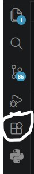

სანამ კოდის წერას დავიწყებდეთ, კომპიუტერში აუცილებლად უნდა გვქონდეს კოდის რედაქტორი. კოდის რედაქტორი არის აპლიკაცია სადაც ვწერთ კოდს. ერთ-ერთი ცნობილი კოდის რედაქტორია VS Code-(Visual Studio Code). ჩვენ ამ კურსზე გამოვიყენებთ VS Code-ს.
როგორ ჩავწეროთ VS Code?
კოდის რედაქტორის გადმოსაწერად საჭიროა შევიდეთ ბმულზე ან გავხსნათ Microsoft Store.
ფაილის გადმოწერის შემდეგ, უბრალოდ გახსენით ის. ინსტალაციის დროს რთული პარამეტრების შეცვლა საჭირო არ არის — შეგიძლიათ თამამად დააჭიროთ ხოლმე 'Next'-ს (შემდეგ). ერთადერთი, შეგიძლიათ აირჩიოთ დისკი, თუ სად გსურთ პროგრამის დაინსტალირება. დაინსტალირების შემდეგ შეგიძლიათ გახსნათ VS Code. პროგრამა მზადაა!
VS Code-ს აქვს სპეციალური დანამატები (Extensions), რომლებიც მუშაობას გვიმარტივებს. გახსენით პროგრამა, მარცხენა მენიუში იპოვეთ სურათზე მითითებული ღილაკი და საძიებო ველში ჩაწერეთ: Live Server. დააჭირეთ Install-ს. ეს დანამატი დაგვეხმარება, რომ ჩვენი დაწერილი კოდის შედეგი ბრაუზერში რეალურ დროში დავინახოთ, რომელიც მომდევნო თავებში ისწავლით.
